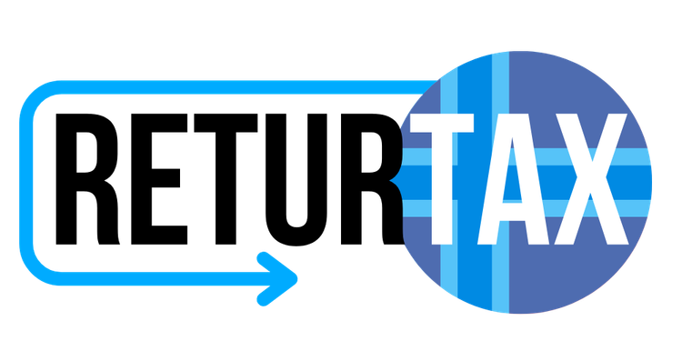

Ați lucrat în Norvegia?
Sunt Dexter. Spuneți-mi povestea dumneavoastră și vă ajut să recuperați banii plătiți în plus pe taxe.
Verificare gratuită · Nu plătiți nimic dacă nu recuperăm

Sunați-neSunt Dexter. Spuneți-mi povestea dumneavoastră și vă ajut să recuperați banii plătiți în plus pe taxe.
Verificare gratuită · Nu plătiți nimic dacă nu recuperăm
Simplu, în 3 pași
Îi spuneți lui Dexter, aici în chat, în ce ani ați lucrat în Norvegia. Sau ne sunați. Durează câteva minute.
Analizăm actele și vă spunem cât puteți primi înapoi. Verificarea este gratuită.
Ne ocupăm de toată corespondența cu Skatteetaten. Banii ajung direct în contul dumneavoastră.
De ce ReturTax
Vorbiți cu oameni care vă înțeleg. Nu trebuie să știți norvegiană sau engleză.
Dacă nu recuperăm nimic, nu plătiți nimic. Comisionul îl aflați de la început.
Completăm formularele și le trimitem noi. Dacă vă lipsesc acte, le cerem noi.
Vă sunăm la fiecare pas important, ca să știți mereu unde e dosarul.
Întrebări frecvente
Oricine a lucrat în Norvegia și a plătit impozit acolo. Mulți au plătit mai mult decât trebuia — mai ales cei care și-au plătit singuri drumul sau cazarea, sau au avut familia în România.
Actul de identitate, numărul norvegian (D-nummer), fluturașii de salariu sau contractul și un cont bancar. Dacă vă lipsesc, multe le putem cere noi.
Verificarea este gratuită. Dacă nu recuperăm nimic, nu plătiți nimic. Comisionul vi-l spunem clar, înainte să semnați ceva.
De obicei câteva luni, în funcție de răspunsul fiscului norvegian. Vă ținem la curent pe tot parcursul.
De regulă se pot verifica și anii trecuți, nu doar ultimul. Spuneți-ne toți anii în care ați lucrat și vă spunem ce se mai poate recupera.
Durează câteva minute. Verificarea este gratuită.